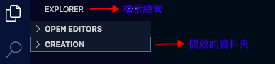

- Robot Framework 概念：
Robot Framework 測試文件製作
以下是手動測試情境的範例，著手把下面範例變成自動化：
- 開啟瀏覽器，到指定網站
- 使用者開啟註冊頁面
- 依序填入註冊資料
- 按註冊鈕發送
- 關閉瀏覽器
讓我們從最基礎開始吧～
首先開啟 Visual Studio，並且開啟測試執行檔想要存入的資料夾位置。
如果尚未建立所屬資料夾，請先建立一個新的資料夾然後開啟指定資料夾。
選項從左到右解釋：新增新的檔案/新增新的資料夾/檔案總管資料重整/資料夾合起來
請建立以下三個資料夾檔案：
- resources (資源): 儲存自訂關鍵字檔案
- results (測試報告): 儲存所有執行測試的結果，包含執行測試時所擷取的圖檔
- tests (測試用例執行檔案): 儲存所有的測試用例檔案
在 tests 資料夾建立一個檔案命名 "suite01.robot"

第一個結構區塊 *** Settings *** 讓我們導入目前這個檔案的設定值以及說明。
- 使用 Documentation 為這個文件寫一個整體的說明。這個可寫也可不寫。不過如果檔案是共用的情況下，還是建議寫一下以便其他測試人員編輯時有效率的了解各別測試檔案的目的。
- 導入外部使用的 Library，這裡就是依據這個檔案會使用到的關鍵字導入所屬 Library。例如：這個檔案的關鍵字 Open Browser（開啟瀏覽器）屬於 Selenium Library 裡面的關鍵字，那我所需要導入的 Library 就只有 SeleniumLibrary 而已。BuiltIn 就不會在我的導入範圍。當然一個測試檔案可以導入很多個 Library。如果目前這個檔案會用到就必須要導入，才不會測試失敗抓不到需要的關鍵字。
Documentation 註冊頁面基本測試
Library SeleniumLibrary
第二個結構區塊 *** Test Cases *** 讓我們創作註冊頁面基本測試用例。
開始創作第一個測試用例。創作的方式就是以寫故事的方式，從頭開始到最終要測試的結果。好比說，目前要測試網站是否可以成功註冊。那我就要從一開始的開啟瀏覽器 》 到指定網站 》 到開啟註冊頁面 》 到輸入各項註冊資訊（這一個步驟可不只看到的這麼簡單。通常會有使用者帳戶資訊以及密碼資訊。。。）》全部欄位輸入完成後按送出。
- 現在我們要找開啟瀏覽器並成功開啟網站的關鍵字，請到 https://carleenlean.github.io/selenium.html 查看開啟瀏覽器並導向網址的關鍵字 Open Browser (開啟瀏覽器)。查看結束後，回到我們的執行檔案設計一個測試用例名字 打開網站註冊頁面。
- 跳到第二行，先按【TAB】然後輸入關鍵字 Open Browser空兩個，然後輸入瀏覽器要打開的網址 https://www.wix.com/然後空兩個輸入 chrome 用 chrome 瀏覽器開啟。
- 接下來跳到第三行，編寫第二步驟： 使用者開啟註冊頁面
- 這裡我們要先按下登入按鈕： 所以我們要再次的尋找關鍵字 Click Button (按指定按鈕)，並且輸入這個關鍵字的引述 元素定位。
- 接下來跳到第四行，編寫第三步驟： 依序填入註冊資料。第一個欄位是 Email，先確認我們要用的關鍵字是什麼，我們要執行輸入，那關鍵字就是 Input Text (輸入文字) 。 這個欄位的元素定位是 id=input_0。另外這個關鍵字還需要一個引述 “輸入的文字”。 Input Text id=input_0 user01
- 上述 Input 關鍵字寫完之後。接下來跳到下一行，編寫第四步驟： 按註冊鈕發送。因這是一個執行按按鈕的動作。所以與上述第三行是一樣關鍵字。 Click Button css=body > login-dialog > div > signup > div > form > div.signin-section > div.signin-with-email > div.login-button > div > button
- 最後，測試結束後關閉瀏覽器。使用的關鍵字是 Close Browser。
打開網站註冊頁面
Open Browser https://www.wix.com/ chrome
Click Button Sign In
其他的欄位也是一樣的操作方式。密碼欄位使用關鍵字：Input Password (輸入密碼)。
下面是打開網站註冊頁面完整的測試情境：